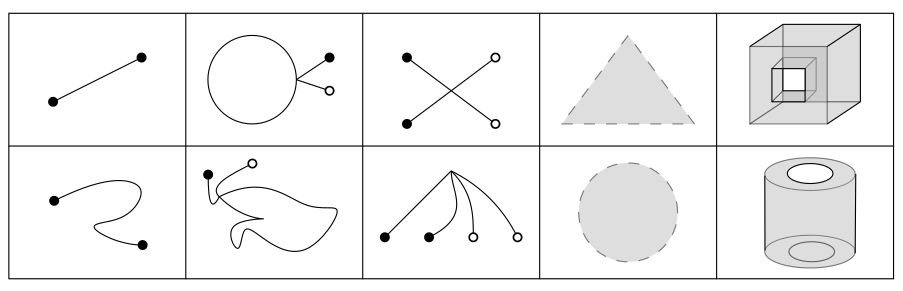
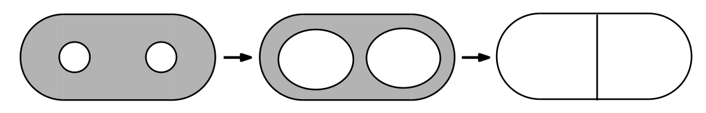
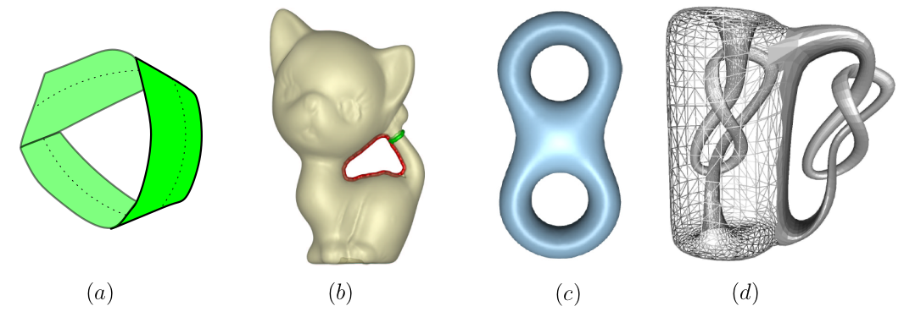
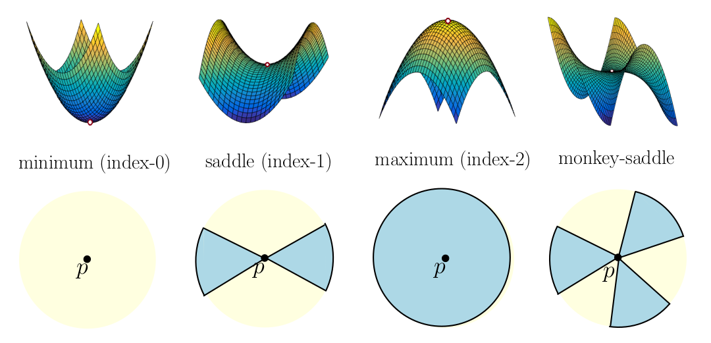
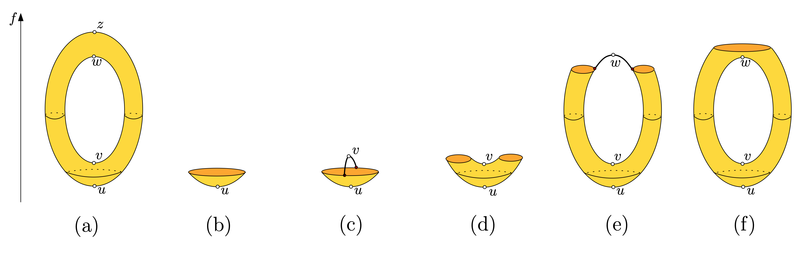

Slide transcript#
I am working on finding ways to increase accessibility of the beamer slides provided. The following is an automatically generated transcript from the pdf of the slides but is still not perfect. I would be happy to hear feedback on how this transcript can be improved for additional usefulness.
Lecture 2 - Maps and Morse Function Preliminaries#
Where were we?
Basics of topology - open, closed, connected,
Maps \(f: A \to B\)
Maps#
Maps
Definition: A function \(f : T \to U\) is continuous if for every open set \(Q \subseteq U\), \(f^{-1} (Q)\) is open. Continuous functions are also called maps. Ex1. \(f:\mathbb{R} \to \mathbb{R}\), \(f(x) = x^2\) Ex2. \(g: \mathbb{R} \to \mathbb{R}\) \(g(x) = \lfloor x \rfloor\) Embedding
Definition: A map \(g : T \to U\) is an embedding of T into U if g is injective.
Injective (1-1): \(f(x) = f(y)\) iff \(x=y\) Ex1. \(f:\mathbb{R} \to \mathbb{R}\), \(f(x) = x^3\) Ex2. \(g: \mathbb{S}^1 \to \mathbb{R}^2\) Homeomorphism
Definition: Let \(T\) and \(U\) be topological spaces.
A homeomorphism is a bijective map \(h : T \to U\) whose inverse is also continuous.
Two topological spaces are homeomorphic if there exists a homeomorphism between them.

Homeomorphism: Cheap trickIf \(T\) and \(U\) are compact metric spaces, every bijective map from \(T\) to \(U\) has a continuous inverse.
Homotopy
Definition: Let \(g : X \to U\) and \(h : X \to U\) be maps.
A homotopy is a map \(H : X \times [0, 1] \to U\) such that \(H(\cdot, 0) = g\) and \(H(\cdot, 1) = h\).
Two maps are homotopic if there is a homotopy connecting them.
Annulus example - Homotopy Annulus: \(A = \{ (\theta,r) \mid 1 \leq r \leq 2\}\). Circle: \(\mathbb{S}^1 = \{ (\theta,r) \mid r = 1\}\) \(g : A \to A\) identity. \(h : A \to A\), \(h(\theta,r) = (\theta,1)\). Show \(R(\theta, r, t) = (\theta,(1-t)r+t)\) is a homotopy. Homotopy equivalent
Definition: Two topological spaces \(T\) and \(U\) are homotopy equivalent if there exist maps \(g : T \to U\) and \(h : U \to T\) such that \(h \circ g\) and \(g \circ h\) are homotopic to the appropriate identity maps.
Annulus example - Homotopy equivalent Show \(A\) is homotopy equivalent to \(\mathbb{S}^1 \subset A\) Retract
Definition: Let \(T\) be a topological space, and let \(U \subset T\) be a subspace.
A retraction \(r\) of \(T\) to \(U\) is a map \(r:T \to U\) such that \(r(x) = x\) for every \(x \in U\). Ex: Annulus to circle Deformation retract
Definition: The space \(U \subseteq T\) is a deformation retract of \(T\) if the identity map on \(T\) can be continuously deformed to a retraction with no motion of the points already in \(U\).
Specifically, there is a homotopy \(R : T \times [0, 1] \to T\) such that
\(R(\cdot, 0)\) is the identity map on \(T\),
\(R(\cdot, 1)\) is a retraction of \(T\) to \(U\), and
\(R(x, t) = x\) for every \(x \in U\) and every \(t \in [0, 1]\).
Annulus example: Deformation retract \(R(\theta, r, t) = (\theta,(1-t)r+t)\).
Check that \(R\) satisfies the three properties to be a deformation retract. Why do I care?
If \(U\) is a deformation retract of \(T\), then \(T\) and \(U\) are homotopy equivalent. Ex. 1

Ex.2 A to O TRY IT: Alphabet Divide the alphabet into equivalence classes: collections of letters that are all homotopy equivalent to every other letter in their collection.
A B C D E F G H I J K L M N O P Q R S T U V W X Y Z
Manifolds
Manifold definition
Definition: A topological space \(M\) is an \(m\)-manifold if every point \(x \in M\) has a point homeomorphic to the \(m\)-ball \(\mathbb{B}_o^d\) or the \(m\)-hemisphere \(\mathbb{HQ}^d\). \(\mathbb{B}_o^d = \{ y \in \mathbb{R}^{d} \mid \|y\| < 1\) \(\mathbb{HQ}^d = \{y \in \mathbb{R}^d \mid d(y,0)<1 \text{ and } y_d \geq 0\}\).

More manifold vocabManifold with/without boundary
Surface: 2-manifold subspace of \(\mathbb{R}^d\)
Non-orientable: can start at point \(p\), stand on one side of the manifold and walk back to \(p\) but be on the other side
Loop: 1-manifold without boundary
Genus: of a surface is \(g\) if \(2g\) is the maximum number of loops that can be removed without disconnecting the surface.
Smooth embedded manifold: No wrinkles, no zero directional derivative Gradients
Definition: Given a smooth function \(f:\mathbb{R}^d \to \mathbb{R}\), the gradient vector field \(\nabla f:\mathbb{R}^d \to \mathbb{R}^d\) at \(x\) is: $$\nabla f (x) = \left[ \frac{\partial f}{\partial x_1}(x), \cdots, \frac{\partial f}{\partial x_d}(x) \right]
In this case, the integer \(s\) is called the index of the critical point \(p\).
Back to critical points

Morse FunctionsDefinition: A smooth function \(f:M \to \mathbb{R}\) defined on a smooth manifold \(M\) is a Morse function if
none of \(f\)’s critical points are degenerate
the critical points have distinct function values. Why do I care? Every function is almost Morse. Morse Functions and sublevelsets

Homework for next timeChoose one of the following to present.
DW 1.6.9
DW 1.6.10
DW 1.6.12